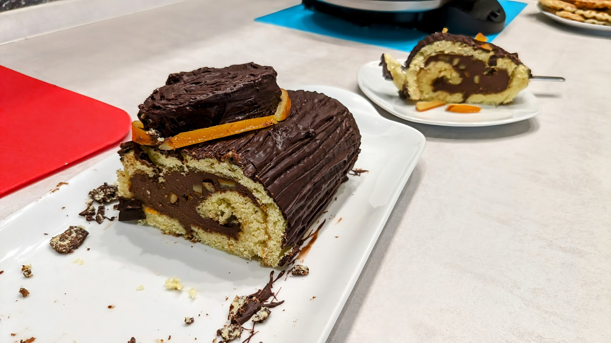

Bûche au chocolat noir, Cointreau, et oranges confites

Pour 12-16 personnes :
- 50g de beurre
- 300g de crème entière
- 250g de chocolat noir de pâtisserie
- 60mL de Cointreau
- 2 petites oranges bio, ou une grosse (on n'utilise que la peau)
- 230g de sucre (80g pour les oranges confites, 150 pour le biscuit roulé)
- 100g de farine
- 50g de poudre d'amandes
- 5 œufs
- (Facultatif) Un peu de marmelade d'oranges
- 300g de chocolat noir de couverture (prévoir plus au cas où)
- Deux jours à l'avance, préparer la ganache : faire fondre le beurre et la crème doucement, râper le chocolat, et quand le mélange liquide bout, sortir du feu, ajouter chocolat et Cointreau, laisser refroidir, puis mettre au frigo jusqu'à ce que ça se soit solidifié (compter 6h, plutôt 10-12h si on veut être
sûr).
- Préparer des oranges confites avec les oranges et 80g de sucre. En réserver un tiers pour décorer la bûche, et couper les autres en petits cubes.
- Quand la ganache s'est solidifiée, préparer et cuire une pâte à biscuit roulé avec 150g de sucre, la farine, la poudre d'amande, et les œufs ; avec ces proportions, la pâte à biscuit est assez grande pour recouvrir une plaque de four.
- Une fois sorti du four, roulé dans un torchon humide, puis refroidi, mettre le biscuit à plat, puis mettre un peu de marmelade d'oranges le long de l'extrémité qu'on commence à rouler, étaler la ganache sur le reste, parsemer le tout des cubes d'oranges confites, et rouler le biscuit. Laisser refroidir entièrement, idéalement au frais.
- Couper les extrémités du biscuit et les disposer sur la bûche pour faire un relief joli. Faire fondre le chocolat de couverture, et glacer la bûche avec ; traces des stries à la fourchette sur le glaçage. Disposer quelques oranges confites sur la bûche, et laisser refroidir quelques heures avant de déguster.
Retour à la liste des recettes